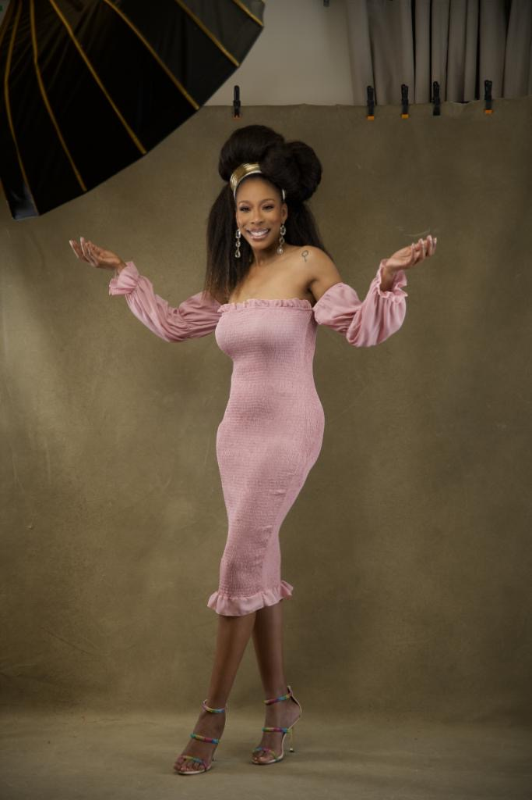
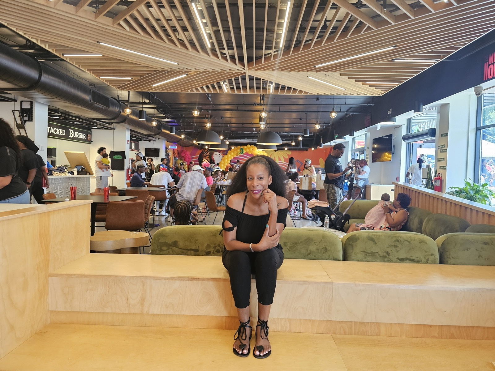
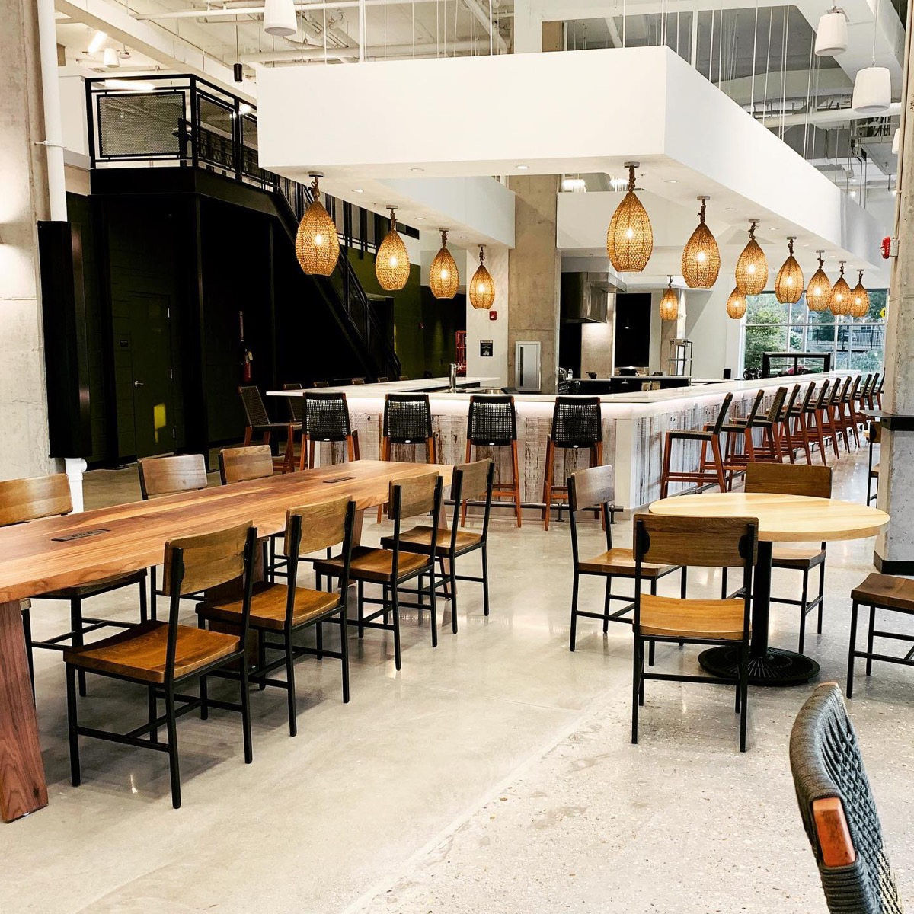

Two decades as a business and real estate attorney. Fifteen years as a food entrepreneur. One mission: to build communities, leaders and businesses that last.

My career began in law enforcement as a white collar crimes investigator and prosecutor at the local and federal level, handling complex fraud matters and training alongside the Secret Service and FBI.
That foundation carried into my legal and business career. I founded The Private Practice Law Group, where I advise companies on real estate, business structuring and operations. In parallel, I built a baked goods company whose products are sold at Starbucks, Nordstrom, Wegmans, Safeway and QVC.
Today I develop food halls that give emerging food entrepreneurs a place to grow, and I advise organizations across government, corporate and nonprofit sectors. Chances are, if you're here, we've connected in some way. Conventional or unconventional. Welcome.
Five companies across law, food and development, each one built to create jobs and opportunity in our community.
Business and real estate law for early-stage companies through established organizations.
Founder ↗ 02"The Cake to Live For." A DMV favorite in Starbucks, Wegmans, Safeway, Nordstrom and QVC.
Owner ↗ 03Baked goods manufacturing and distribution for grocery, coffee and retail partners.
President ↗ 04Food hall development and incubation for minority-owned food businesses.
Developer ↗ 05Strategic advisory and project management for government, corporate and nonprofit partners.
Principal ↗
2025 IEDC Excellence Award · Baltimore, MDWest Baltimore's first food hall: a former lumber yard turned 7,800 sq. ft. food hall with six minority-owned vendors and 65 mixed-income homes.

Brentwood, MD · Prince George's CountyPrince George's County's first food hall and one of the first African American-run food halls in the U.S. An 8,500 sq. ft. incubator in a USDA-designated food desert.
"I believe I've been given the ability to build, so I use my given abilities to do just that."April N. Richardson, Esq.
The Mill on North, Baltimore
The Maryland Daily Record
Serving on numerous boards and commissions across the region
Legal counsel, business strategy, food hall development, or a speaker for your next event. Tell me what you're working on.
Send an email